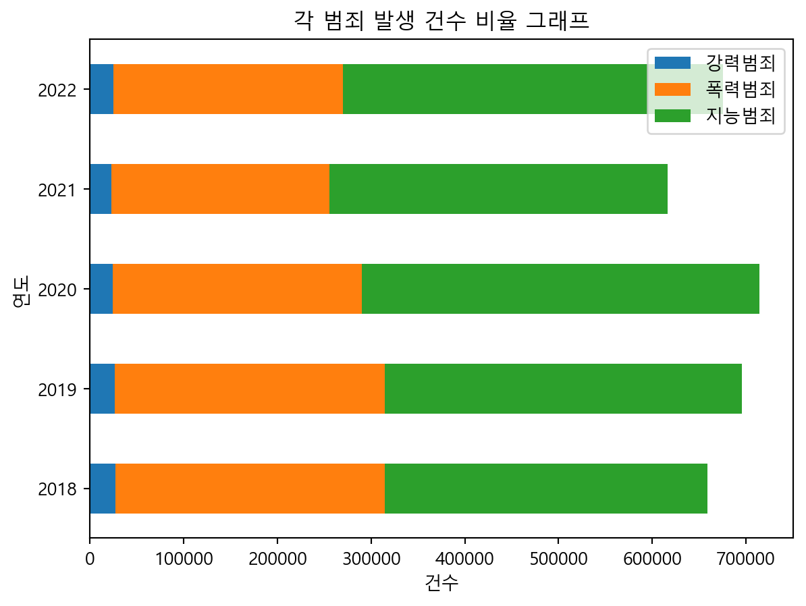
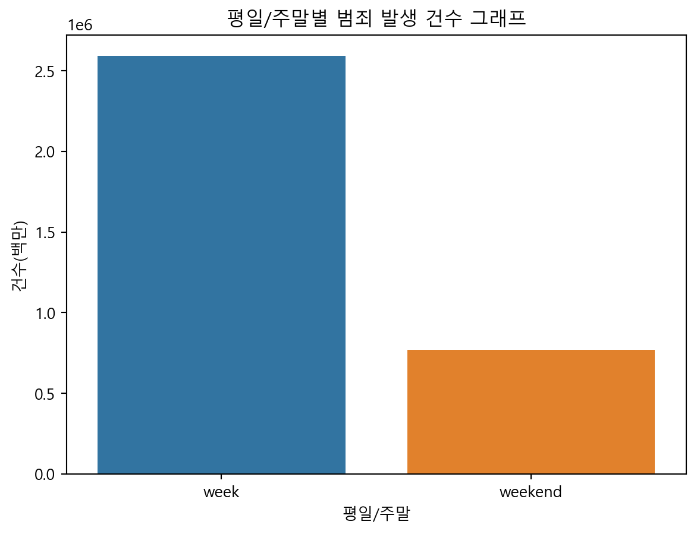
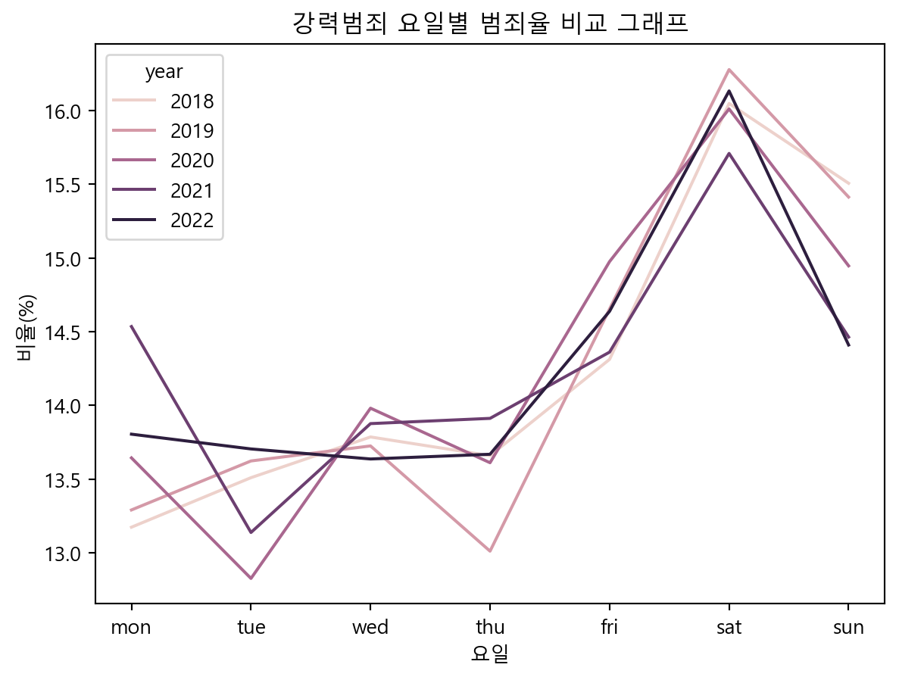
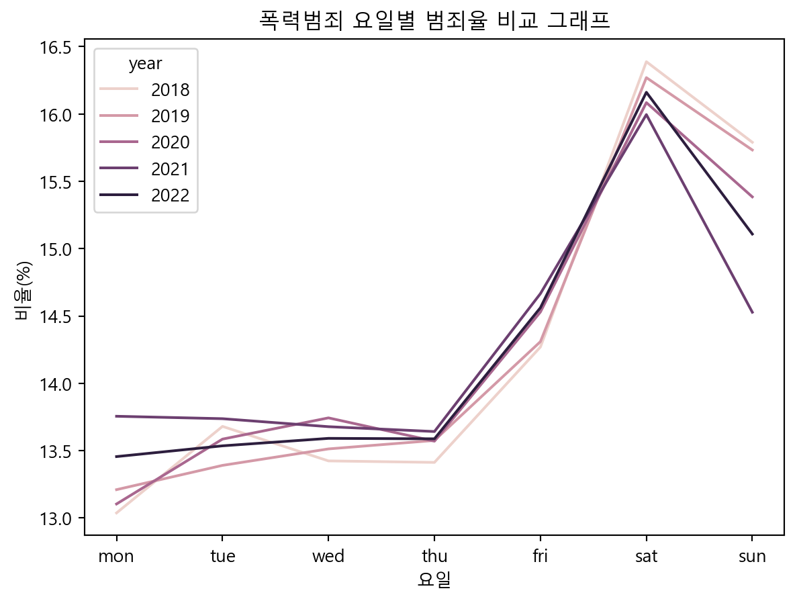
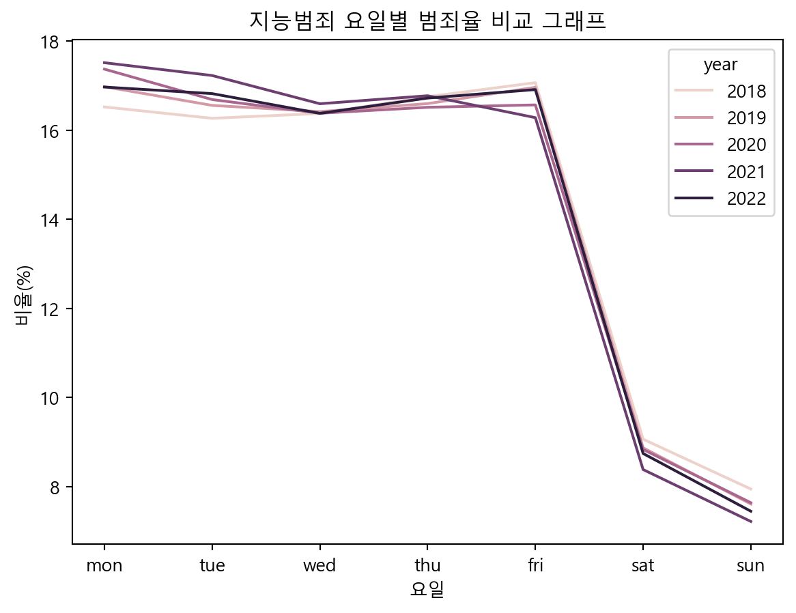
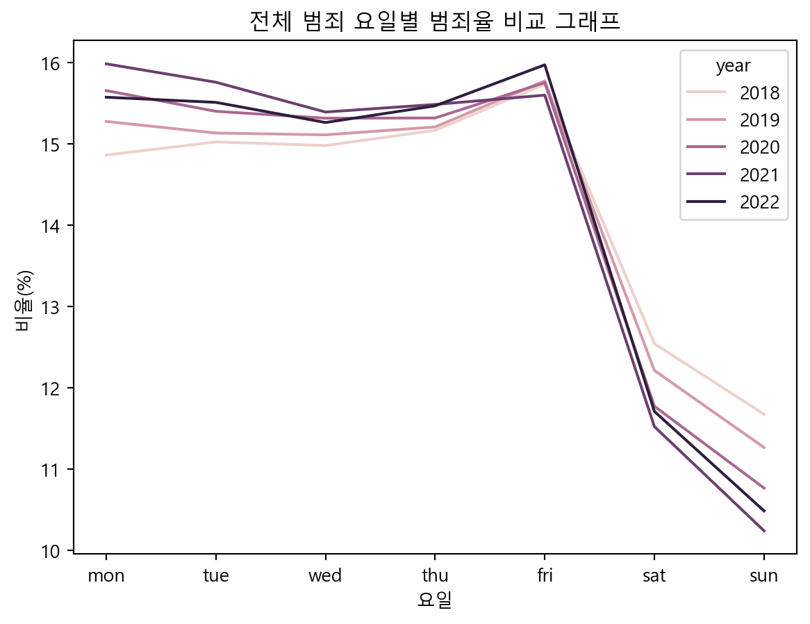
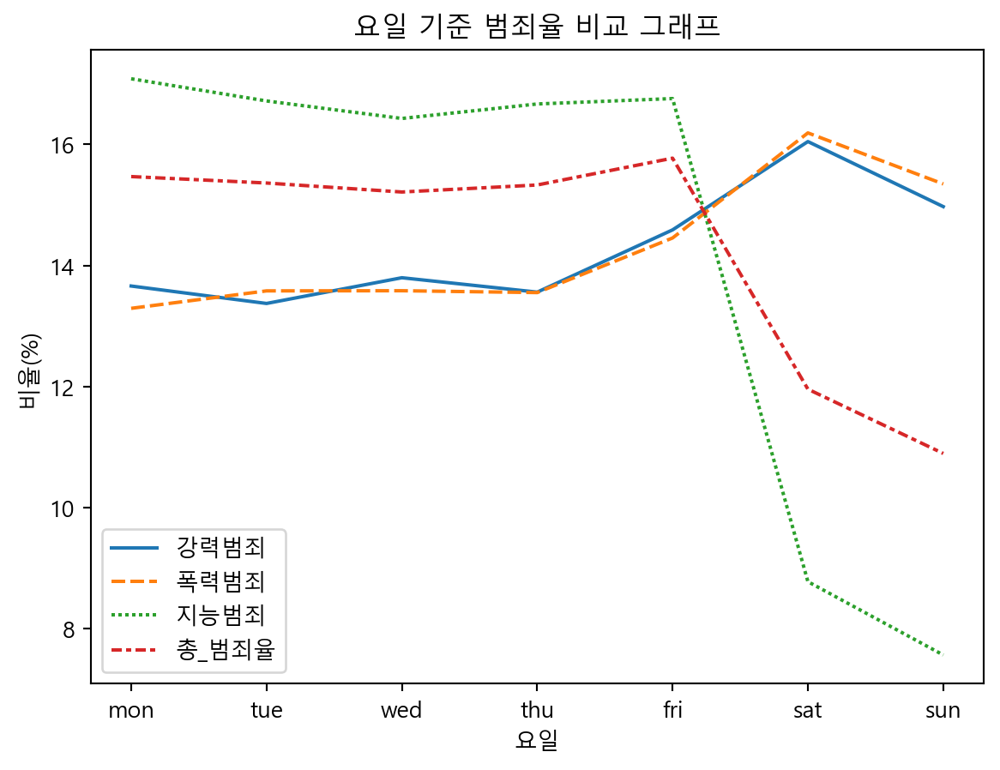

# 0. 패키지 로드
import pandas as pd
import numpy as np
import seaborn as sns
import matplotlib.pyplot as plt
# 1. 데이터 파일 불러오기, 원본 데이터 복사하기
## header: 원본의 두 번째 행 데이터를 열의 이름으로 지정
## encoding: UnicodeDecodeError 발생으로 한글 표현 가능한 인코딩 방식인 EUC-KR 지정
## pd.set_option(): 전체 열을 모두 표시하도록 지정
pd.set_option('display.max_columns', None)
df = pd.read_csv('crime.csv', header = 1, encoding = 'EUC-KR')
df.head()
# 2. 원본 데이터 복사하기
## deepcopy로 원본유지
crime = df.copy()어느 요일이 범죄로부터 가장 안전할까?
2018~2022년 강력/폭력/지능범죄의 요일별 발생 건수 데이터
[데이터 로드]
[변수명 변경]
# 3. 열 이름, 원소 이름 변경
## 열 이름 변경
### 강력범죄는 s_, 폭력범죄는 g_, 지능범죄는 i_로 시작하도록 변경
crime.columns
crime.columns = ['year','day']\
+ [i.replace(i, "s_"+i) for i in crime.columns[2:10]]\
+ [i.replace(i, "g_"+i) for i in crime.columns[10:18]]\
+ [i.replace(i, "i_"+i) for i in crime.columns[18:27]]
## 원소 이름 변경
## replace(): 요일을 영어로 일괄 변경
crime = crime.replace({'월요일':'mon',
'화요일':'tue',
'수요일':'wed',
'목요일':'thu',
'금요일':'fri',
'토요일':'sat',
'일요일':'sun'})
crime.head(7)
## reindex(): 행의 순서 바꾸기(일>토에서 월>일로) > 추후 그래프 순서를 위해서 설정
len(crime)
crime = crime.reindex([1, 2, 3, 4, 5, 6, 0,
8, 9, 10, 11, 12, 13, 7,
15, 16, 17, 18, 19, 20, 14,
22, 23, 24, 25, 26, 27, 21,
29, 30, 31, 32, 33, 34, 28])
crime.head(7)| year | day | s_살인기수 | s_살인미수등 | s_강도 | s_강간 | s_유사강간 | s_강제추행 | s_기타 강간·강제추행등 | s_방화 | g_상해 | g_폭행 | g_체포·감금 | g_협박 | g_약취·유인 | g_폭력행위등 | g_공갈 | g_손괴 | i_직무유기 | i_직권남용 | i_증수뢰 | i_통화 | i_문서·인장 | i_유가증권인지 | i_사기 | i_횡령 | i_배임 | |
|---|---|---|---|---|---|---|---|---|---|---|---|---|---|---|---|---|---|---|---|---|---|---|---|---|---|---|---|
| 1 | 2018 | mon | 40 | 74 | 120 | 698 | 113 | 2197 | 51 | 236 | 5326 | 20195 | 168 | 2462 | 34 | 1175 | 685 | 7452 | 105 | 96 | 53 | 230 | 2202 | 20 | 45478 | 7968 | 802 |
| 2 | 2018 | tue | 38 | 62 | 133 | 709 | 103 | 2263 | 48 | 263 | 5649 | 21334 | 189 | 2530 | 27 | 1205 | 644 | 7767 | 92 | 110 | 57 | 226 | 1992 | 25 | 45020 | 7793 | 761 |
| 3 | 2018 | wed | 53 | 68 | 116 | 743 | 96 | 2333 | 49 | 235 | 5395 | 21160 | 180 | 2474 | 26 | 1088 | 604 | 7681 | 92 | 110 | 69 | 208 | 1893 | 30 | 45399 | 7922 | 725 |
| 4 | 2018 | thu | 41 | 76 | 117 | 646 | 99 | 2389 | 45 | 246 | 5396 | 21181 | 192 | 2444 | 30 | 1163 | 656 | 7514 | 114 | 110 | 64 | 242 | 2710 | 32 | 45752 | 7992 | 730 |
| 5 | 2018 | fri | 54 | 67 | 101 | 699 | 99 | 2547 | 55 | 212 | 5628 | 22423 | 165 | 2408 | 26 | 1206 | 593 | 8591 | 103 | 104 | 61 | 212 | 1991 | 58 | 46698 | 8817 | 790 |
| 6 | 2018 | sat | 29 | 69 | 108 | 892 | 139 | 2760 | 59 | 243 | 6267 | 26997 | 151 | 2384 | 15 | 1662 | 457 | 9200 | 36 | 40 | 21 | 42 | 829 | 15 | 22158 | 7819 | 288 |
| 0 | 2018 | sun | 54 | 72 | 126 | 906 | 127 | 2564 | 49 | 256 | 6105 | 25977 | 162 | 2498 | 29 | 1705 | 457 | 8479 | 39 | 33 | 22 | 34 | 673 | 17 | 19524 | 6802 | 248 |
[파생변수 추가]
# 4. 파생변수 추가
## 범죄별 건수 합계 및 총 범죄 건수 합계 파생변수
crime = crime.assign(
total_s = crime.iloc[:, 2:10].sum(axis = 1),
total_g = crime.iloc[:, 10:18].sum(axis = 1),
total_i = crime.iloc[:, 18:27].sum(axis = 1),
total = crime.iloc[:, 2:27].sum(axis = 1))
crime.head()
## 평일/주말 구분 라벨 파생변수
### 평일: 월~금, 주말: 토~일
crime['day_label'] = np.where(crime['day'].isin(['mon', 'tue', 'wed', 'thu', 'fri']), \
'week', 'weekend')
crime.head(7)| year | day | s_살인기수 | s_살인미수등 | s_강도 | s_강간 | s_유사강간 | s_강제추행 | s_기타 강간·강제추행등 | s_방화 | g_상해 | g_폭행 | g_체포·감금 | g_협박 | g_약취·유인 | g_폭력행위등 | g_공갈 | g_손괴 | i_직무유기 | i_직권남용 | i_증수뢰 | i_통화 | i_문서·인장 | i_유가증권인지 | i_사기 | i_횡령 | i_배임 | total_s | total_g | total_i | total | day_label | |
|---|---|---|---|---|---|---|---|---|---|---|---|---|---|---|---|---|---|---|---|---|---|---|---|---|---|---|---|---|---|---|---|---|
| 1 | 2018 | mon | 40 | 74 | 120 | 698 | 113 | 2197 | 51 | 236 | 5326 | 20195 | 168 | 2462 | 34 | 1175 | 685 | 7452 | 105 | 96 | 53 | 230 | 2202 | 20 | 45478 | 7968 | 802 | 3529 | 37497 | 56954 | 97980 | week |
| 2 | 2018 | tue | 38 | 62 | 133 | 709 | 103 | 2263 | 48 | 263 | 5649 | 21334 | 189 | 2530 | 27 | 1205 | 644 | 7767 | 92 | 110 | 57 | 226 | 1992 | 25 | 45020 | 7793 | 761 | 3619 | 39345 | 56076 | 99040 | week |
| 3 | 2018 | wed | 53 | 68 | 116 | 743 | 96 | 2333 | 49 | 235 | 5395 | 21160 | 180 | 2474 | 26 | 1088 | 604 | 7681 | 92 | 110 | 69 | 208 | 1893 | 30 | 45399 | 7922 | 725 | 3693 | 38608 | 56448 | 98749 | week |
| 4 | 2018 | thu | 41 | 76 | 117 | 646 | 99 | 2389 | 45 | 246 | 5396 | 21181 | 192 | 2444 | 30 | 1163 | 656 | 7514 | 114 | 110 | 64 | 242 | 2710 | 32 | 45752 | 7992 | 730 | 3659 | 38576 | 57746 | 99981 | week |
| 5 | 2018 | fri | 54 | 67 | 101 | 699 | 99 | 2547 | 55 | 212 | 5628 | 22423 | 165 | 2408 | 26 | 1206 | 593 | 8591 | 103 | 104 | 61 | 212 | 1991 | 58 | 46698 | 8817 | 790 | 3834 | 41040 | 58834 | 103708 | week |
| 6 | 2018 | sat | 29 | 69 | 108 | 892 | 139 | 2760 | 59 | 243 | 6267 | 26997 | 151 | 2384 | 15 | 1662 | 457 | 9200 | 36 | 40 | 21 | 42 | 829 | 15 | 22158 | 7819 | 288 | 4299 | 47133 | 31248 | 82680 | weekend |
| 0 | 2018 | sun | 54 | 72 | 126 | 906 | 127 | 2564 | 49 | 256 | 6105 | 25977 | 162 | 2498 | 29 | 1705 | 457 | 8479 | 39 | 33 | 22 | 34 | 673 | 17 | 19524 | 6802 | 248 | 4154 | 45412 | 27392 | 76958 | weekend |
[범죄별, 평일/주말별 건수 합계 그래프]
# 5. (1)발생 건수 합계 기준 그래프
## 연도 기준 범죄별 건수 합계
### 그래프 설정
plt.rcParams.update({'font.family':'Malgun Gothic','font.size' : 10})
plt.figure(figsize = (8, 6))
### 집단별 합계표 생성
year_total = crime.groupby('year')\
.agg(강력범죄=('total_s','sum'),
폭력범죄=('total_g','sum'),
지능범죄=('total_i','sum'))
### 그래프 생성
year_total.plot.barh(stacked = True)
plt.xlabel("건수")
plt.ylabel("연도")
plt.title("각 범죄 발생 건수 비율 그래프")
plt.show()
plt.clf()
## 평일/주말 기준 건수 합계
### 평일/주말별 건수 합계표 생성
week_end = crime.groupby('day_label', as_index = False) \
.agg(total=('total', 'sum'))
### 그래프 생성
sns.barplot(data = week_end, x = 'day_label', y = 'total', hue = 'day_label')
plt.xlabel("평일/주말")
plt.ylabel("건수(백만)")
plt.title("평일/주말별 범죄 발생 건수 그래프")
plt.show()
plt.clf()<Figure size 768x576 with 0 Axes>

<Figure size 672x480 with 0 Axes>[범죄별 요일별 건수 비율 그래프]
# 5. (2)연도별 범죄 발생 비율 파생변수 추가
## pd.options.display.float_format : 소수점 둘째 자리까지만 보이도록 설정
pd.options.display.float_format = '{:.2f}'.format
for i in ["_s", "_g" ,"_i" ,""]:
for j in range(2018, 2023):
crime.loc[crime['year'] == j, 'total'+ i +'_year'] = sum(crime.loc[crime['year'] == j,'total' + i])
crime['ratio'+ i +'_day'] = crime['total' + i] / crime['total'+ i +'_year'] * 100
## 아래 코드도 같은 결과
### crime = crime.assign(
### total_s_year = lambda x: x.groupby('year')['total_s'].transform('sum'),
### ratio_s_day = lambda x: x['total_s'] / x['total_s_year'] * 100,
###
### total_g_year = lambda x: x.groupby('year')['total_g'].transform('sum'),
### ratio_g_day = lambda x: x['total_g'] / x['total_g_year'] * 100,
###
### total_i_year = lambda x: x.groupby('year')['total_i'].transform('sum'),
### ratio_i_day = lambda x: x['total_i'] / x['total_i_year'] * 100,
###
### total_year = lambda x: x.groupby('year')['total'].transform('sum'),
### ratio_day = lambda x: x['total'] / x['total_year'] * 100)
crime.head(10)| year | day | s_살인기수 | s_살인미수등 | s_강도 | s_강간 | s_유사강간 | s_강제추행 | s_기타 강간·강제추행등 | s_방화 | g_상해 | g_폭행 | g_체포·감금 | g_협박 | g_약취·유인 | g_폭력행위등 | g_공갈 | g_손괴 | i_직무유기 | i_직권남용 | i_증수뢰 | i_통화 | i_문서·인장 | i_유가증권인지 | i_사기 | i_횡령 | i_배임 | total_s | total_g | total_i | total | day_label | total_s_year | ratio_s_day | total_g_year | ratio_g_day | total_i_year | ratio_i_day | total_year | ratio_day | |
|---|---|---|---|---|---|---|---|---|---|---|---|---|---|---|---|---|---|---|---|---|---|---|---|---|---|---|---|---|---|---|---|---|---|---|---|---|---|---|---|---|
| 1 | 2018 | mon | 40 | 74 | 120 | 698 | 113 | 2197 | 51 | 236 | 5326 | 20195 | 168 | 2462 | 34 | 1175 | 685 | 7452 | 105 | 96 | 53 | 230 | 2202 | 20 | 45478 | 7968 | 802 | 3529 | 37497 | 56954 | 97980 | week | 26787.00 | 13.17 | 287611.00 | 13.04 | 344698.00 | 16.52 | 659096.00 | 14.87 |
| 2 | 2018 | tue | 38 | 62 | 133 | 709 | 103 | 2263 | 48 | 263 | 5649 | 21334 | 189 | 2530 | 27 | 1205 | 644 | 7767 | 92 | 110 | 57 | 226 | 1992 | 25 | 45020 | 7793 | 761 | 3619 | 39345 | 56076 | 99040 | week | 26787.00 | 13.51 | 287611.00 | 13.68 | 344698.00 | 16.27 | 659096.00 | 15.03 |
| 3 | 2018 | wed | 53 | 68 | 116 | 743 | 96 | 2333 | 49 | 235 | 5395 | 21160 | 180 | 2474 | 26 | 1088 | 604 | 7681 | 92 | 110 | 69 | 208 | 1893 | 30 | 45399 | 7922 | 725 | 3693 | 38608 | 56448 | 98749 | week | 26787.00 | 13.79 | 287611.00 | 13.42 | 344698.00 | 16.38 | 659096.00 | 14.98 |
| 4 | 2018 | thu | 41 | 76 | 117 | 646 | 99 | 2389 | 45 | 246 | 5396 | 21181 | 192 | 2444 | 30 | 1163 | 656 | 7514 | 114 | 110 | 64 | 242 | 2710 | 32 | 45752 | 7992 | 730 | 3659 | 38576 | 57746 | 99981 | week | 26787.00 | 13.66 | 287611.00 | 13.41 | 344698.00 | 16.75 | 659096.00 | 15.17 |
| 5 | 2018 | fri | 54 | 67 | 101 | 699 | 99 | 2547 | 55 | 212 | 5628 | 22423 | 165 | 2408 | 26 | 1206 | 593 | 8591 | 103 | 104 | 61 | 212 | 1991 | 58 | 46698 | 8817 | 790 | 3834 | 41040 | 58834 | 103708 | week | 26787.00 | 14.31 | 287611.00 | 14.27 | 344698.00 | 17.07 | 659096.00 | 15.73 |
| 6 | 2018 | sat | 29 | 69 | 108 | 892 | 139 | 2760 | 59 | 243 | 6267 | 26997 | 151 | 2384 | 15 | 1662 | 457 | 9200 | 36 | 40 | 21 | 42 | 829 | 15 | 22158 | 7819 | 288 | 4299 | 47133 | 31248 | 82680 | weekend | 26787.00 | 16.05 | 287611.00 | 16.39 | 344698.00 | 9.07 | 659096.00 | 12.54 |
| 0 | 2018 | sun | 54 | 72 | 126 | 906 | 127 | 2564 | 49 | 256 | 6105 | 25977 | 162 | 2498 | 29 | 1705 | 457 | 8479 | 39 | 33 | 22 | 34 | 673 | 17 | 19524 | 6802 | 248 | 4154 | 45412 | 27392 | 76958 | weekend | 26787.00 | 15.51 | 287611.00 | 15.79 | 344698.00 | 7.95 | 659096.00 | 11.68 |
| 8 | 2019 | mon | 45 | 70 | 113 | 686 | 99 | 2272 | 53 | 181 | 4908 | 19966 | 189 | 3013 | 40 | 1126 | 818 | 7974 | 108 | 126 | 46 | 186 | 2130 | 22 | 52740 | 8559 | 859 | 3519 | 38034 | 64776 | 106329 | week | 26476.00 | 13.29 | 287913.00 | 13.21 | 381533.00 | 16.98 | 695922.00 | 15.28 |
| 9 | 2019 | tue | 48 | 68 | 116 | 734 | 109 | 2306 | 45 | 181 | 5063 | 20766 | 170 | 3039 | 41 | 1100 | 740 | 7634 | 123 | 118 | 42 | 169 | 1971 | 16 | 51876 | 8128 | 730 | 3607 | 38553 | 63173 | 105333 | week | 26476.00 | 13.62 | 287913.00 | 13.39 | 381533.00 | 16.56 | 695922.00 | 15.14 |
| 10 | 2019 | wed | 40 | 62 | 105 | 719 | 92 | 2358 | 49 | 209 | 5038 | 20981 | 171 | 3072 | 34 | 1086 | 757 | 7766 | 106 | 97 | 52 | 187 | 1840 | 30 | 51225 | 8318 | 787 | 3634 | 38905 | 62642 | 105181 | week | 26476.00 | 13.73 | 287913.00 | 13.51 | 381533.00 | 16.42 | 695922.00 | 15.11 |
# 5. (3)연도/요일별 범죄 발생 비율 변화 그래프
## 연도/요일별 범죄 발생 비율표 생성
ratio_year_day = crime.iloc[:, [0, 1, -7, -5, -3, -1]]
ratio_year_day.head(7)
## 강력범죄 연도/요일별 범죄 발생 비율 변화 그래프
### plt.xticks() : x축의 범위를 2018~2022로 설정
sns.lineplot(data = ratio_year_day, x = 'day', y = 'ratio_s_day', hue = 'year')
plt.xlabel("요일")
plt.ylabel("비율(%)")
plt.title("강력범죄 요일별 범죄율 비교 그래프")
plt.show()
plt.clf()
## 폭력범죄 연도/요일별 범죄 발생 비율 변화 그래프
sns.lineplot(data = ratio_year_day, x = 'day', y = 'ratio_g_day', hue = 'year')
plt.xlabel("요일")
plt.ylabel("비율(%)")
plt.title("폭력범죄 요일별 범죄율 비교 그래프")
plt.show()
plt.clf()
## 지능범죄 연도/요일별 범죄 발생 비율 변화 그래프
sns.lineplot(data = ratio_year_day, x = 'day', y = 'ratio_i_day', hue = 'year')
plt.xlabel("요일")
plt.ylabel("비율(%)")
plt.title("지능범죄 요일별 범죄율 비교 그래프")
plt.show()
plt.clf()
## 전체 범죄 연도/요일별 범죄 발생 비율 변화 그래프
sns.lineplot(data = ratio_year_day, x = 'day', y = 'ratio_day', hue = 'year')
plt.xlabel("요일")
plt.ylabel("비율(%)")
plt.title("전체 범죄 요일별 범죄율 비교 그래프")
plt.show()
plt.clf()



<Figure size 672x480 with 0 Axes>[요일 기준 범죄별 비율 비교 그래프]
# 6. 요일별 전체 범죄 발생 비율 그래프
## 요일별 전체 범죄 발생 비율표 생성
total_day = crime.groupby('day') \
.agg(total_s = ('total_s', 'sum'),
total_g = ('total_g', 'sum'),
total_i = ('total_i', 'sum'),
total = ('total', 'sum'))
total_day = total_day.assign(
강력범죄 = lambda x: x['total_s'] / sum(x['total_s']) * 100,
폭력범죄 = lambda x: x['total_g'] / sum(x['total_g']) * 100,
지능범죄 = lambda x: x['total_i'] / sum(x['total_i']) * 100,
총_범죄율 = lambda x: x['total'] / sum(x['total']) * 100)
total_day = total_day.reindex(index=['mon', 'tue', 'wed', 'thu', 'fri', 'sat', 'sun'])
ratio_total_day = total_day.iloc[:, 4:]
ratio_total_day
## 요일별 전체 범죄 발생 비율 그래프 생성
sns.lineplot(data = ratio_total_day)
plt.xlabel("요일")
plt.ylabel("비율(%)")
plt.title("요일 기준 범죄율 비교 그래프")
plt.show()